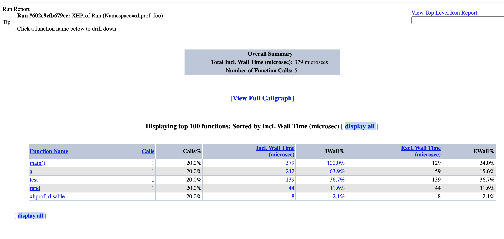
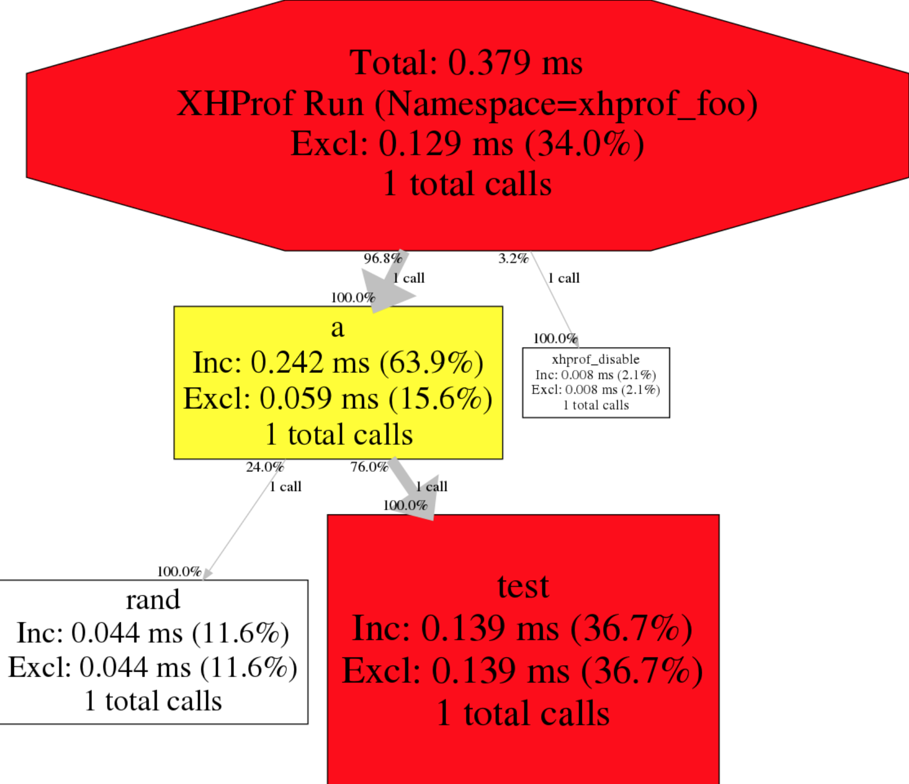

php性能分析利器：xhprof
xhprof是facebook团队开发的用于研究php性能的扩展，并且提供了图形化的界面展示性能参数和过程。对于各种php的项目的性能瓶颈研究有一定帮助，值得一用。
我在上一篇《Dockerfile搭建极简LNMP环境》一文中已经创建好了LNMP环境，下面是基于这个容器进行xhprof的安装和使用。
- 安装xhprof
编写如下install_xhprof.sh脚本，分为编译安装、设置扩展、部署前端模块文件三大步骤。
# get the source codes
wget https://pecl.php.net/get/xhprof-2.2.3.tgz
tar xvf xhprof-2.2.3.tgz
#mv xhprof-2.2.3 xhprof
cd xhprof/extension
phpize
./configure --enable-xhprof
make && make install
# enable xhprof in php modules
echo "extension=xhprof.so" > /etc/php/7.4/cli/conf.d/20-xhprof.ini
echo "xhprof.output_dir=/tmp" >> /etc/php/7.4/cli/conf.d/20-xhprof.ini
# enable xhprof in php-fpm modules
cp /etc/php/7.4/cli/conf.d/20-xhprof.ini /etc/php/7.4/fpm/conf.d/xhprof.ini
# restart php-fpm service
service php7.4-fpm restart
# move fronted-codes to nginx's path
mkdir -p /var/www/xhprof
cp -r /installsofts/xhprof/xhprof_html /var/www/xhprof/
cp -r /installsofts/xhprof/xhprof_lib /var/www/xhprof/
- 添加虚拟主机到Nginx配置
然后在/etc/nginx/site-enabled目录下创建一个名为xhprof.conf的配置文件，其内容如下：
server{
listen 80;
server_name xhprof.alice.show;
location / {
root /var/www/xhprof;
index index.html index.php;
}
location ~ \.php$ {
root /var/www/xhprof;
include snippets/fastcgi-php.conf;
fastcgi_pass unix:/run/php/php7.4-fpm.sock;
}
}
- 编写测试代码
万事俱备只欠东风，下面编写一个测试代码来调用到xhprof：
<?php
include_once "./xhprof_lib/utils/xhprof_lib.php";
include_once "./xhprof_lib/utils/xhprof_runs.php";
function test($max)
{
for ($idx = 0; $idx < $max; $idx++) {
echo '2333' . "\r\n";
}
}
function a()
{
test(rand(1000,2000));
}
// 开启xhprof
xhprof_enable();
a();
// 收集profilling数据
$xhprof_data = xhprof_disable();
$xhprof_runs = new XHProfRuns_Default();
$run_id = $xhprof_runs->save_run($xhprof_data, "xhprof_foo");
# 打印出结果报告的URL
echo "\nhttp://xhprof.alice.show/xhprof_html/index.php?run=$run_id&source=xhprof_foo\n";
在浏览器中访问http://xhprof.alice.show/test2.php，就可以看到页面最后打印出了类似输出：
http://xhprof.alice.show/xhprof_html/index.php?run=602c9cfb679ee&source=xhprof_foo
然后访问这个链接就可以看到性能报告列表了，其中重点关注Calls（调用次数）以及Excl.Wall Time(执行时间)两列。如下图图1所示，可以看到每个方法被调用的情况。

此外还提供了调用图，更加直观，如图2所示，红色部分表示耗时很大的环节，也是性能优化需要重点关注的地方。

感谢Facebook团队开源出这么好用的性能分析工具，php性能之路还将继续！

【推荐】阿里云热销爆款云服务器，新老同享一口价99元/年
· 一次 elasticsearch 查询瞬间超时案例分析
· 聊一聊 .NET高级调试 中的一些内存术语
· 安卓端出现 https 请求失败的一次问题排查
· 初探 webpack 之单应用多端构建
· 深入解析 C# List < T > 的源码
· 如何检测Windows服务停止后自动启动？自动运行.bat批处理文件？
· 基于DotNetty实现自动发布 - 通信实现
· .NET8极致性能优化AOT
· 一次elasticsearch 查询瞬间超时案例分析
· 新来个架构师，把Xxl-Job原理讲的炉火纯青